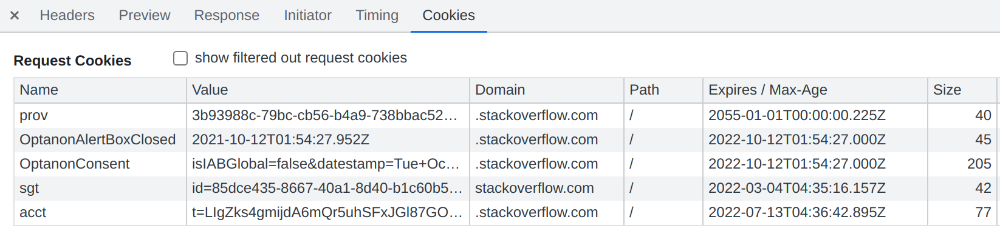
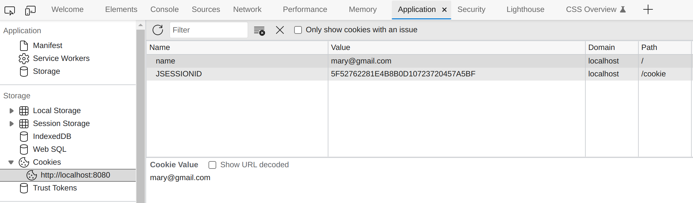

4.4 Session Management (2)
In this section, we continue studying session management. It mainly includes how to use custom cookies, and another two listeners with respect to session.
In-depth cookie
Although cookies were originally designed to help support session state, we can use custom cookies for other things. Remember, a cookie is nothing more than a little piece of data (name/value String pair) exchanged between the client and the server. The server sends the cookie to the client, and the client returns the cookie when the client makes another request.
One cool thing about cookies is that the user doesn't have to get involved: the cookie exchange is automatic (as long as cookies are enabled in the client). Of course, programmers are also able to send cookies manually if necessary. Cookie is main tool for tracking (recording and analyzing user behavior) and personalization (user preferences, themes, and other settings) on the Internet. Fig 4.9 shows the cookies of requests of StackOverFlow:

By default, a cookie lives only as long as a session; once the client quits the browser, the cookie disappears. That is how JSESSIONID cookie works. But you can tell a cookie to stay alive even after the browser shuts down by setting its max-age. First, let's have a look at cookie related APIs.
Readers can refer to Using HTTP cookies for more details, and in this book we only discuss how to use cookies via a few APIs.
Creating a new Cookie:
Cookie cookie = new Cookie("name", "mary@gmail.com");
Setting how long a cookie will live on the client. Note that setMaxAge() is defined in seconds:
cookie.setMaxAge(30 * 60);
Sending the cookie to the client:
response.addCookie(cookie);
Getting the cookies from the client:
for (Cookie cookie : request.getCookies()) {
if (cookie.getName().equals("name")) {
// to do
}
}
HomeServlet.java in ch4/cookie is similar to the log in example in Section 4.3. Since currently we didn't implement log in yet, it will always display Hello Guest. As we mentioned above, people can send cookies programmatically. Let's try it in the web browser. Open Application at Inspect window, select Cookies, and add new cookie named name.

As a result, the browser will send requests with you newly added cookies, then the home.jsp shall display Hello mary@gmail.com after refreshing.
URL rewriting
Sometimes the client may disable the cookies, and as a result, Session will be infeasible. Here is a short instruction about how to disable the cookie for your browser temporally. As for Edge, you can add http://localhost into Block of Settings | Cookies and Site | Cookies and data stored.
When it is disabled, you will always see "This is a new session" for HellServlet of ch4/session. Luckily, you can use URL rewriting as a backup. Its core idea is simple: append the jsessionid after the URL.
String url = response.encodeRedirectURL("home");
response.sendRedirect(url);
So, even though the client won't store the cookies, the request can still be sent with the jsessionid. In addition, we also would like to rewrite the hyperlinks on JSP pages:
<a href="<%= response.encodeURL("login") %>">Log in</a>
[!NOTE] The URL would remain unchanged if cookies are accepted in the browser.
Session listener
In Section 4.2, we introduce listeners which are able to get notified when some event happens, and in this subsection, we are going to study one application of HttpSessionListener: count how many people are online.
Implementations of this interface are notified of changes to the list of active sessions in a web application.
Of course, here people are not strictly people in the physical world, because we assume that one session is one people. So if you access this web application using different web browsers, or in Private Window, then the listener would consider them as different people. The complete code is found at ch4/session2.
@WebListener
public class SessionListener implements HttpSessionListener
We can maintain a static member variable in SessionListener[1], and increase it by one in sessionCreated(), and decrease it by one in sessionDestroyed. So far so good, but it has thread-safety issue. One way to avoid the concurrent problem is to use APIs under java.util.concurrent, and java.util.concurrent.atomic.AtomicInteger is int value that may be updated atomically:
private static final AtomicInteger COUNT = new AtomicInteger(0);
Session bind listener
Based on the last subsection, what about counting how many people log in? We can accomplish this task even if there is no listener. To be specific, we maintain a counter, and then increase it by one when one logs in; decrease it by one when one logs out.
And HttpSessionBindingListener provides another solution to this problem:
Causes an object to be notified when it is bound to or unbound from a session.
This interface has two APIs:
valueBound(): This object is added (bounded) to a session.valueUnbound(): This object is removed (unbound) from a session.
For example, ActiveUser is a class containing a logged user's name and age. And then she logs in, we add a ActiveUser object into attributes in session's scope; and when she logs out, we remove the attribute.
class ActiveUser {
private String name;
private int age;
}
To let ActiveUser listen to the bounding event, this class shall implement HttpSessionBindingListener. So it can find out when it is put into (or taken out from) a session. It won't tell ActiveUser anything about other session events.
class ActiveUser implements HttpSessionBindingListener
Then we should override the valueBound() and valueUnbound() method for it. The complete code can be found ch4/session2. With HttpSessionBindingListener, we do not have to concern about the counter changing when the user logs in or logs out, and this simplifies our workload at some extent.
[1] The key point is to maintain a variable that can be accessed globally. Static variable is a good choice, and attribute in context scope is also fine.